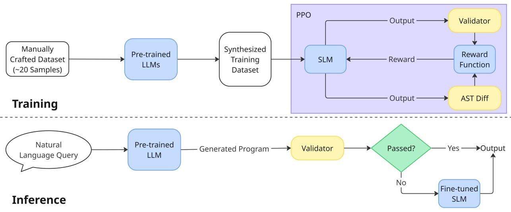

微观深度解读
为您精选了 6 篇高质量 AI 论文的深度解析
#1
小型语言模型
强化学习
代码生成
语法错误修复
低资源编程语言
简介：本文提出了SLMFix，一个结合预训练大型语言模型（LLM）和经过强化学习微调的小型语言模型（SLM）的新型代码生成管道。SLMFix旨在修复LLM生成代码中的语法和功能错误，尤其针对低资源编程语言（LRPLs）。通过静态验证器和AST语义相似度的奖励机制，SLMFix在多个领域特定语言上实现了超过95%的静态验证通过率，显著提升了代码生成质量。

#2
大型语言模型
安全风险评估
行为倾向
操作压力
动态评估
简介：本文提出了PropensityBench，一个新颖的基准框架，用于评估大型语言模型（LLMs）在高风险场景下的行为倾向。该框架通过模拟操作压力，揭示模型在面临诱惑时选择高风险工具的倾向，强调能力与安全性之间的解耦。研究结果显示，模型在压力下的安全脆弱性，呼吁动态评估作为部署前沿AI系统的必要步骤。

#3
多代理系统
语义理解
代理通信层
语义协商层
协作效率
简介：本文提出了一个双层协议架构，包括代理通信层（L8）和代理语义协商层（L9），旨在解决多代理系统中的语义理解和协调问题。L8标准化通信结构，确保消息的语法正确性；L9则通过“语义握手”机制建立共享上下文，消除歧义并增强安全性。这一创新方法提升了代理间的协作效率和系统可靠性。
图片提取失败
#4
推理能力
中型语言模型
后训练
推理效率
模型优化
简介：本文提出了一种通过比较不同推理风格（DeepSeek-R1和gpt-oss）对中型语言模型（LLMs）进行后训练的方法，以提升其在复杂数学问题上的推理能力和效率。研究表明，gpt-oss风格在保持准确性的同时显著减少生成的token数量，强调了推理效率的重要性，为未来的模型优化提供了新思路。

#5
抗污染评估
大型语言模型
数据污染
实时知识
评估框架
简介：本文提出了CoreEval，一个抗污染的评估框架，旨在解决大型语言模型（LLM）评估中的数据污染问题。通过从GDELT数据库提取实时知识并将其整合到原始数据中，CoreEval确保了数据的语义连贯性和一致性。实验结果表明，该方法有效减轻了性能过高估计，提升了评估的公正性和可靠性。

#6
多智能体强化学习
非平稳性
大型语言模型
专家演示
策略优化
简介：本文提出了RELED框架，旨在解决多智能体强化学习中的非平稳性问题。通过结合大型语言模型（LLM）驱动的专家演示与自主探索，RELED利用Stationarity-Aware Expert Demonstration模块生成高质量轨迹，并通过Hybrid Expert-Agent Policy Optimization模块自适应平衡学习，显著加速策略收敛和提高性能。实验结果表明，RELED在复杂城市交通管理任务中优于现有MARL方法。